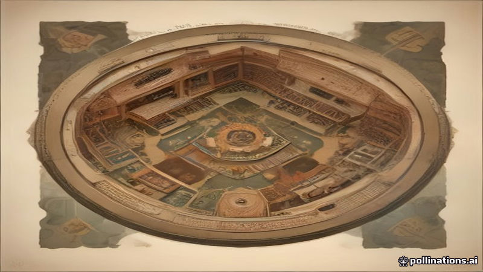

প্রদর্শনীতে ঔপনিবেশিকতা ও নাৎসিবাদের সম্পর্ক, ঐতিহাসিক তুলনার বিতর্ক তীব্র
DW · 2026-11-10
AI-generated illustrationএকটি নতুন প্রদর্শনী ঔপনিবেশিকতা ও নাৎসিবাদের সংযোগ দেখায়, ইতিহাসবিদদের মধ্যে তীব্র আলোচনা উস্কে দেয়।
একটি নতুন প্রদর্শনী ঔপনিবেশিকতা এবং নাৎসি শাসনের মধ্যে সংযোগ অনুসন্ধান করে, যেখানে হিটলারের পূর্ব ইউরোপকে “জার্মানির ভারত” বলে উল্লেখ করা হয়েছে। প্রদর্শনীতে ঐতিহাসিক বস্তু ও বর্ণনা দেখানো হয়েছে, যা কীভাবে সাম্রাজ্যবাদী মতাদর্শ নাৎসি নীতিতে প্রভাব ফেলতে পারে তা চিত্রিত করে।
এই প্রদর্শনী ইতিহাসবিদ ও দর্শকদের মধ্যে তীব্র বিতর্কের কারণ হয়েছে। কিছুজন যুক্তি দেন যে ঔপনিবেশিকতা ও হলোকাস্টের তুলনা শাসনমূলক পদ্ধতির সাদৃশ্য প্রকাশ করে, অন্যদিকে অন্যরা সতর্ক করেন যে এ ধরনের তুলনা পৃথক নিধনকে সরলীকরণ করতে পারে। এই আলোচনা ইতিহাসের ব্যাখ্যার বিস্তৃত উত্তেজনা প্রতিফলিত করে।
Read the original reporting at the links above.
English version
Exhibition Links Colonialism and Nazism, Sparks Debate Over Historical Comparisons
A new exhibition is examining connections between European colonialism and the Nazi regime, noting Hitler’s description of Eastern Europe as “Germany’s India.” The display presents artifacts and narratives that trace how imperial ideologies may have informed Nazi policies.
The exhibition has ignited a contentious debate among historians and the public. Some argue that comparing colonialism with the Holocaust highlights shared mechanisms of domination, while others warn that such parallels risk oversimplifying distinct atrocities. The discussion reflects broader tensions over how history is interpreted.